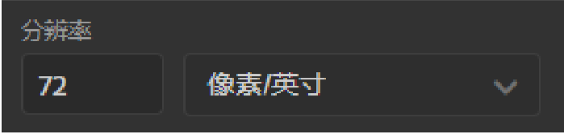
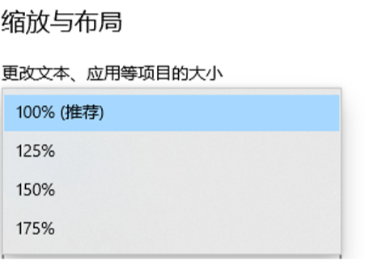
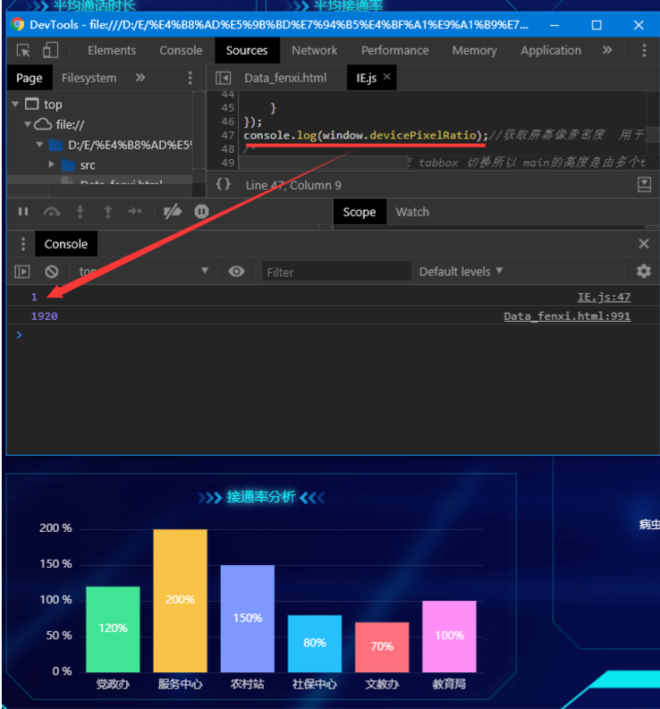
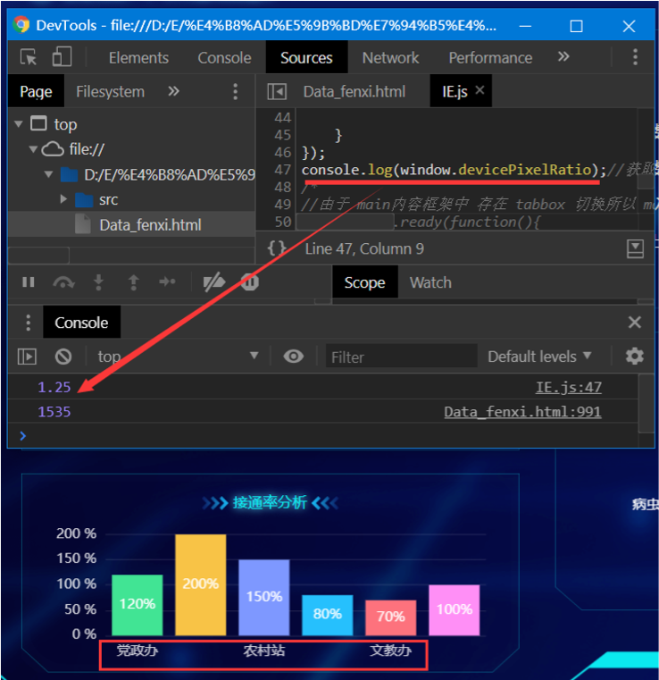

原文出处:本文由博客园博主隔城府窥红颜提供。
原文连接:https://www.cnblogs.com/gcfkhy/p/11426496.html
原文连接:https://www.cnblogs.com/gcfkhy/p/11426496.html
此处设置一个默认分辨率 1920*1080 , 设备尺寸15.6吋. （一般笔记本尺寸和分辨率）
默认dpi（win屏幕一般为72或96dpi） (PS默认新建文档默认值72, 72一般在网络上传输,300dip用于输出打印)

当设备的分辨率和设备尺寸不变的情况下，设备屏幕dpi（win屏幕一般为72或96dpi）在高于某个值（72或96dpi）的时候。屏幕的dpi就会影响网页缩放（从而影响网页布局）
屏幕dpi是如何变化的呢？
默认情况下：设备尺寸过小 , 分辨率过高导致设备dpi大于每英寸/72像素, windows会自动对屏幕显示进行放大 . 进而导致浏览器展示的网页被放大 (从而导致网页中、字体、元素尺寸变大，导致网页布局错乱)。
开发者为了调试在不同dpi下网页的缩放和布局故意更改设备dpi。
win10 调整dpi

125%、150%、175%、200%、300%代表放大等级，数值会由 windows系统自动设置，同时自己也可手动设置。
苹果手机4s以后与苹果电脑retina屏 都代表着 系统dpi大于72或96或115dpi。
附常用尺寸表以及dpi https://uiiiuiii.com/screen/
默认情况下，手机的尺寸较小，分辨率过大（1080或2k）导致设备dpi非常高（一般400以上）所以这就导致了网页在手机上字体会被放大
解决方案
设置CSS 媒体查询
@media screen根据不同的分辨率和dpi来改变网页：字体、尺寸、和HTML排列方式。达到兼容不同分辨率和同一分辨率下dpi不同的网页兼容。
css设置同dpi下,不同分辨率区间改变HTML布局达到兼容
@media screen and (min-width: 990px/*起始最小宽度*/) and (max-width: 1200px/*结束最大宽度*/){
/*样式书写处*/
}
css设置同分辨率下,不同dpi改变网页、字体大小、元素尺寸、和HTML排版方式
@media screen and (min-resolution: 1.25dppx), /*通用像素密度*/
(min-device-pixel-ratio: 1.25),/*安卓ios使用谷歌火狐浏览器也可使用*/
(min-resolution: 115dpi) /*万恶的IE*/
{
/*样式书写处*/
}

示例DEMO / 同分辨率下不同 dpi下处理
真实示例
-
dpi放大倍率为1时效果
-
请注意下方网页UI字体大小 及柱状图下方文字菜单数量 以及 柱状图左侧Y轴数值
-
上方红线处是测试当前屏幕dpi 的放大倍数 (与windows 缩放与布局处一直 100%等于此处的 1 具体请参见：本章屏幕dpi是如何变化的呢？)
- 

-
dpi放大倍率为1.25时效果
-
请注意下方网页UI字体大小 及柱状图下方文字菜单数量 以及 柱状图左侧Y轴数值
-
上方红线处是测试当前屏幕dpi 的放大倍数 (与windows 缩放与布局处一致 125%等于此处的 1.25 具体请参见：本章屏幕dpi是如何变化的呢？)
- 